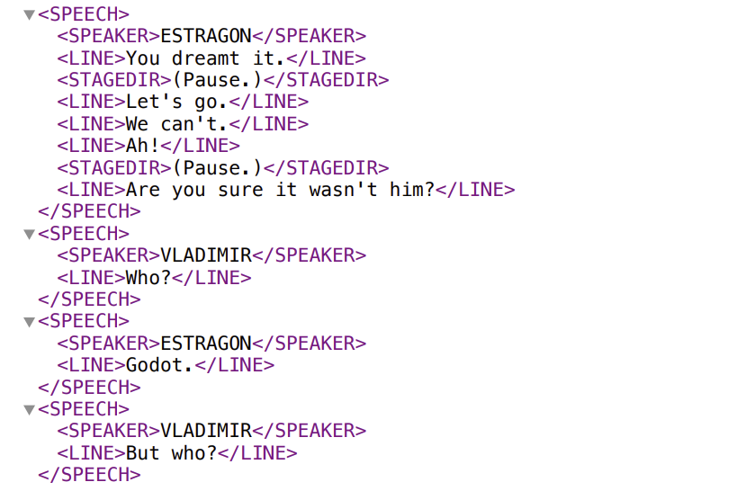
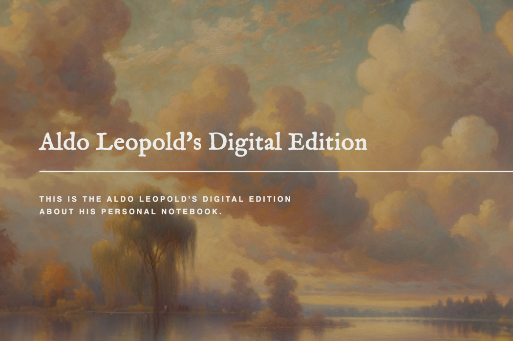
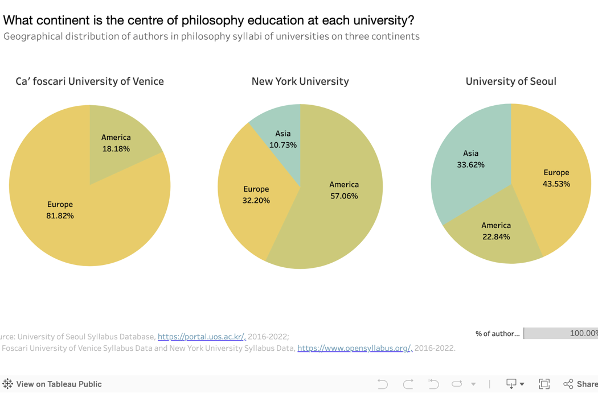
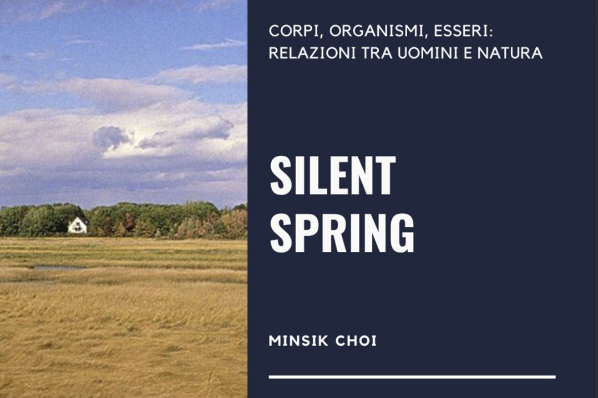
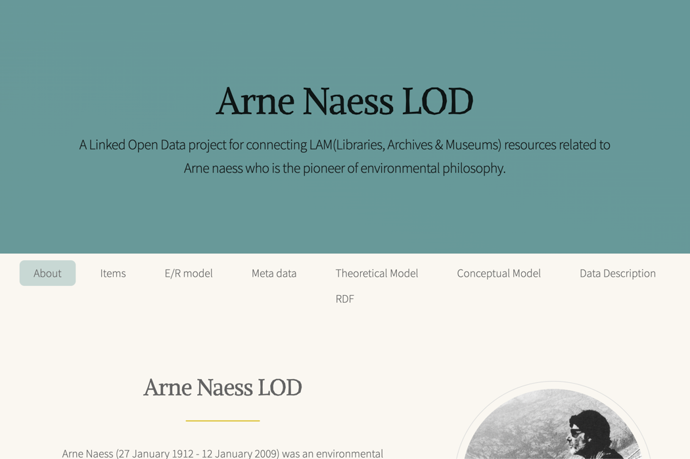
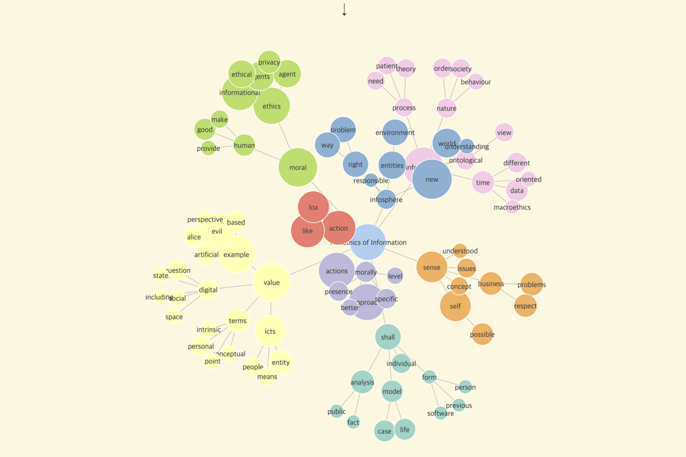
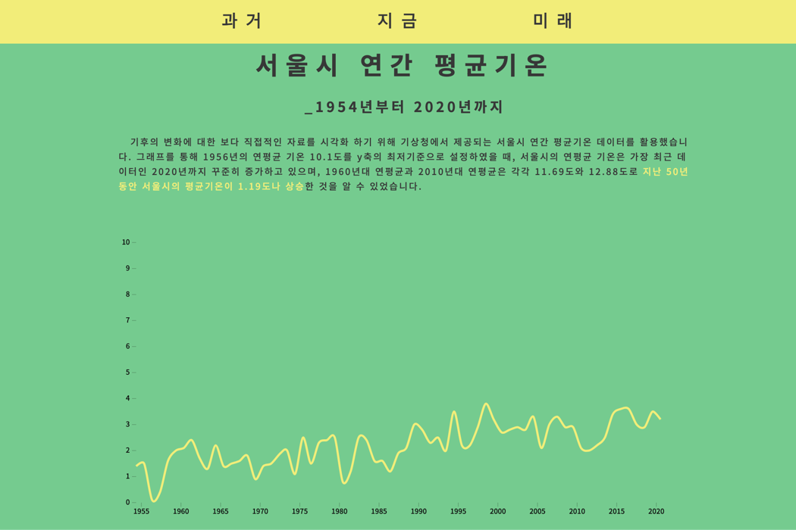

UN Human Rights Knowledge Gateway
UN Human Rights Office · Sep 2025
Designed the landing page based on UN web accessibility and OHCHR branding guildlines.
UI/UX Design
I use digital technologies as an engine for open and ethical knowledge sharing.
Designed the landing page based on UN web accessibility and OHCHR branding guildlines.
UI/UX Design
A study on how pauses regulate emotional balance in Waiting for Godot using ML model and emotion classification.
Machine Learning
Used Python and XML to map character emotions and relationships through social network analysis.
Data Analytics
Using digital humanities to access an environmental philosopher's notebook. Used IIIF and XML to connect ideas across sources.
Web Development
Uncovering teaching patterns across three continents. Visualized university data to extract insights into curriculum, authorship, and topic trends.
Data AnalyticsDeveloped a WordPress showcasing how public art fosters urban regeneration and social sustainability in Venice's specific district.
UI/UX Design
An interactive web article about how Rachel Carson and Silent Spring sparked a paradigm shift between humans and nature in the 1960s.
Web Content
Mapped an environmental philosopher's life through key places, events, and concepts using LOD, metadata, and RDF.
Linked Open Data
Analyzed The Ethics of Information by Luciano Floridi using text data to visualize key knowledge concepts and connections.
Data Analytics
Tracing real-time temperature patterns. Visualized climate data to address the UN's 13th Sustainable Development Goal.
Data Analytics